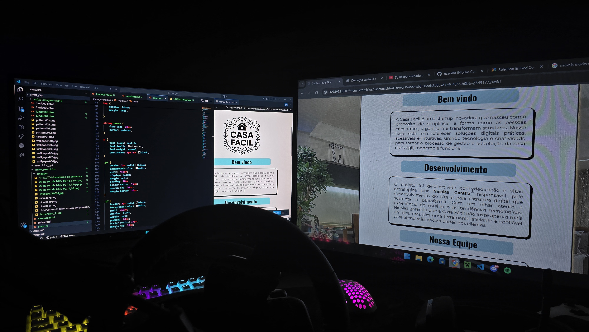
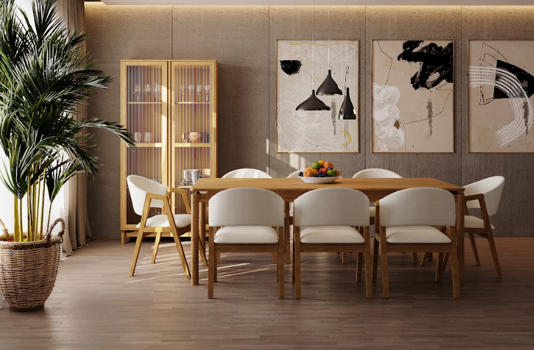

Bem vindo
A Casa Fácil é uma startup inovadora que nasceu com o propósito de simplificar a forma como as pessoas encontram, organizam e transformam seus lares. Nosso foco está em oferecer soluções digitais práticas, acessíveis e intuitivas, unindo tecnologia e criatividade para tornar o processo de gestão e adaptação da casa mais ágil, moderno e funcional.
Desenvolvimento
O projeto foi desenvolvido com dedicação e visão estratégica por Nicolas Caraffa, responsável pelo desenvolvimento do site e pela estrutura digital que sustenta a plataforma. Com um olhar atento à experiência do usuário e às tendências tecnológicas, Nicolas garantiu que a Casa Fácil não fosse apenas mais um site, mas sim uma ferramenta eficiente e confiável para atender às necessidades dos clientes.

Nossa Equipe
A equipe da Casa Fácil conta também com a participação de Nathally Vitória, Maria Eduarda, Damaris e Bianca, profissionais engajadas em oferecer inovação e qualidade em cada etapa do processo. Cada uma contribui com ideias, estratégias e perspectivas únicas, fortalecendo a identidade da startup e garantindo que nossas soluções estejam alinhadas com o que o mercado e a sociedade demandam.
Nosso Diferencial
Nosso diferencial está na união entre talento, profissionalismo e colaboração. Valorizamos a diversidade de ideias e a capacidade de cada integrante em agregar valor ao projeto. Essa sinergia reflete-se na construção de uma startup sólida, preparada para crescer e impactar positivamente o cotidiano das pessoas que buscam praticidade e eficiência em suas casas.
Valores
Com visão de futuro, valores e compromisso com a excelência, a Casa Fácil se posiciona como uma startup pronta para expandir seu alcance, consolidar sua presença no mercado e continuar inovando. Somos movidos pela missão de transformar desafios em soluções inteligentes, tornando a vida em casa cada vez mais simples, organizada e prazerosa.